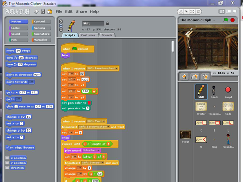
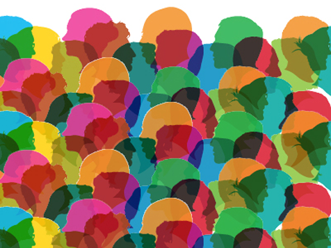
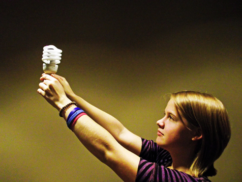

Modules organize content topically
Our course, Thriving in Our Digital World, is organized into the following eight modules
-
Protecting code and data 24/7/365
This module is currently under development.
-

Create, create, create, create!
In our digital world, programming is an essential skill. It provides the basic framework for enabling human interaction with machines. The programming module affords students the opportunity to explore the basic concepts underlying modern programming languages while maintaining minimal prerequisite knowledge. Students will utilize the Scratch Visual Programming Language to create many small programs, incorporating both audio and visual effects, and in doing so, they will gain experience with objects, methods, conditionals, repetition, and lists.
-
The digitization of everything
In our digital world, everything is bits. Digital literacy requires an understanding of how information is represented digitally. Bits, bytes, and binary code provide the foundation for how digital tools work. In the Representation module, students will learn about how information is stored and manipulated digitally. Their project is to demonstrate their computing expertise via a portfolio of digital multimedia, and a job interview.
-
Bringing worlds together
This module is currently under development.
-
Tools of the trade
During the Computer Module, students are hired by one of three separate organizations that are having problems that they hope can be fixed with a computing solution. Each organization's employees have different computing needs and different budgets. Students act are the experts that will develop a solution to the organizations? problem. Students will work in teams to identify the organizations computing needs and develop an effective, economical computing solution for their organization. Students will create a proposal that includes a detailed budget and rational and present the proposal to a panel of decision makers that choose the best proposal for their organization.
-

Data, data, everywhere!
In our digital world, data is everywhere. Our big data module focuses on the collection, extraction, storage, and analysis of massive data sets. Students will explore concepts and applications of big data analysis in order to learn how data can be used to tell a story. In the end, students will analyze authentic big data sets and use their results to share a new idea with the world via a TEDx kinda talk.
-
Computers can learn, too!
This module is currently under development.
-

Making the world a better place
In our digital world, computing has a global impact. It affects the way we communicate, interact, think, and enable innovations in nearly every field. It is a part of our everyday lives, and has both beneficial and harmful effects. In the Innovations module, our students will discuss and explore these concepts as they investigate a cybercrime that involves a identity theft, a conspiracy, and multiple instances of cyberbullying. Their job is to use the digital evidence to exonerate their peer with a persuasive argument and discussion of the digital innovations involved.